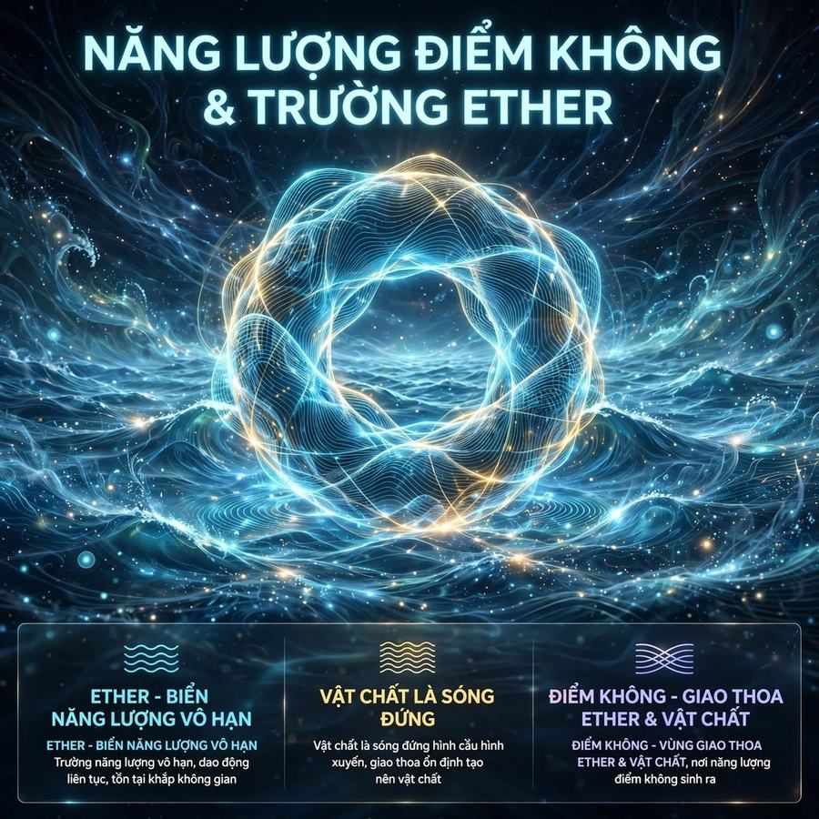
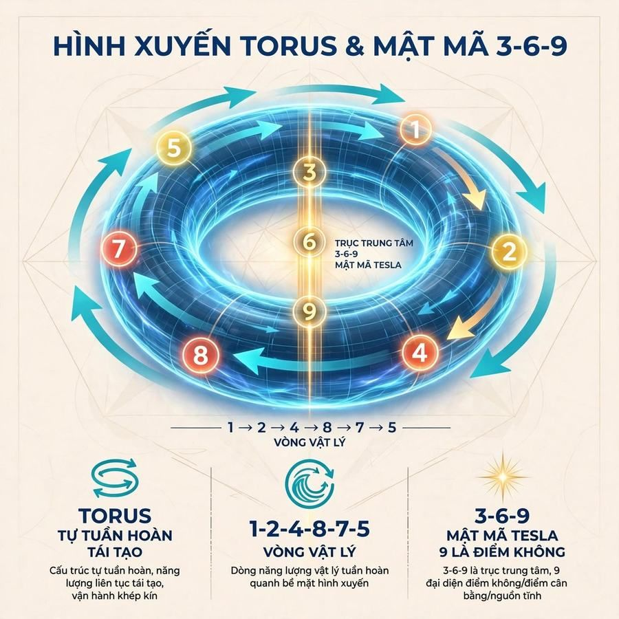
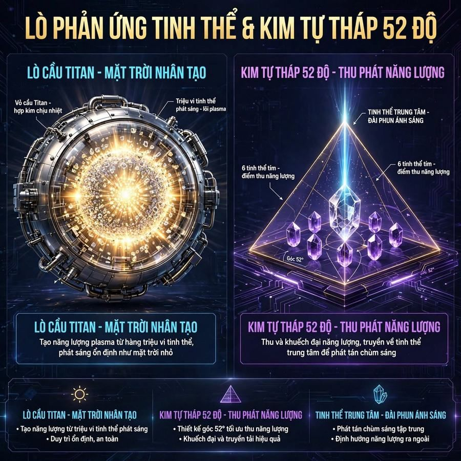
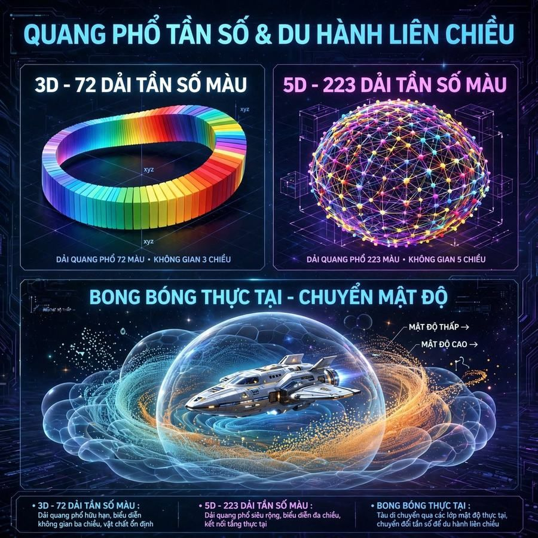

Trang chủ / Chuyên đề 8: Khoa Học & Công Nghệ / Kỳ 74
Chuyên đề 8 · Kỳ 74 / 90
NĂNG LƯỢNG ĐIỂM KHÔNG (ZERO-POINT ENERGY) & HỆ THỐNG TINH THỂ QUANG PHỔ

Trong chuỗi hành trình giải mã bí ẩn Vũ trụ và khoa học siêu chiều, một trong những câu hỏi cốt lõi luôn thách thức trí tuệ nhân loại chính là: Làm thế nào mà các nền văn minh tiên tiến trong Đa Vũ trụ có thể vận hành những đại chiến hạm khổng lồ du hành xuyên không-thời gian, thắp sáng toàn bộ đô thị liên sao mà không cần đốt một giọt nhiên liệu hóa thạch, không phát thải độc hại và không bao giờ cạn kiệt nguồn cung?
Đối với khoa học vật chất thô 3D hiện tại, định luật bảo toàn năng lượng cổ điển và định luật II nhiệt động lực học luôn gắn liền với sự tăng entropy — nghĩa là năng lượng luôn bị hao hụt, tiêu tán và đòi hỏi phải nạp thêm nhiên liệu đầu vào.
Tuy nhiên, các nền văn minh thiên hà và khoa học lượng tử siêu chiều đã minh chứng một sự thật vũ trụ hoàn toàn ngược lại: Không gian hư vô không hề trống rỗng! Toàn bộ Đa Vũ trụ được bao bọc trong một "biển năng lượng tiềm năng" vô hạn được gọi là trường Ether (hay Phryll / Sinh lực Vũ trụ). Và chìa khóa để khai thác nguồn sức mạnh vĩnh cửu này chính là Công nghệ Năng lượng Điểm Không (Zero-Point Energy) kết hợp với Hệ thống Lò phản ứng Tinh thể Thạch anh Quang phổ!
Năng lượng Điểm Không thực chất hoạt động theo cơ chế vật lý nào? Tại sao cấu trúc hình học thiêng liêng hình xuyến (Torus) cùng dãy số toán học 3-6-9 lại đóng vai trò là "mật mã kích hoạt"? Sự kết hợp giữa Tinh thể Thạch anh cắt Vogel, Kim tự tháp tỷ lệ 52 độ và Tần số Âm thanh Solfeggio tạo ra nguồn năng lượng dồi dào ra sao? Và sự thật về việc nguồn năng lượng tự do này từng hiện diện trên Trái Đất bị che giấu như thế nào?
Hãy cùng dấn thân vào Kỳ 4: Năng lượng Điểm Không & Hệ thống Tinh thể Quang phổ để mở ra cánh cửa khoa học năng lượng vĩ đại nhất của Đa Vũ trụ!
✦ ✦ ✦1. BẢN CHẤT NĂNG LƯỢNG ĐIỂM KHÔNG & TRƯỜNG ETHER NGUYÊN THỦY
Để hiểu được Năng lượng Điểm Không, trước tiên chúng ta phải rũ bỏ ảo tưởng của nền khoa học giảm trừ vốn xem không gian vũ trụ là một khoảng chân không "chết" hoàn toàn vô hình.
A. Không Gian Là Nguồn Năng Lượng Tiềm Năng Vô Hạn (Ether / Phryll)
- Khái Niệm Trường Ether: Không gian không hề trống rỗng mà là một môi trường chất lỏng năng lượng tiềm năng liên tục, đan xen và kết nối trọn vẹn khắp Đa Vũ trụ. Nền khoa học vũ trụ gọi dải sinh lực phổ quát này là Phryll hay Ether.
- Vật Chất Chỉ Là Sóng Dừng (Standing Waves): Tất cả vật chất vật lý mà chúng ta nhìn thấy hay chạm vào — từ các hạt hạ nguyên tử, phân tử DNA, cơ thể con người cho đến các hành tinh và ngôi sao — thực chất không phải là chất rắn cố định. Chúng là kết quả của sự ngưng tụ năng lượng tiềm năng, tạo thành các sóng đứng hình cầu-hình xuyến (Torus Standing Waves) tại các điểm nút (nodes) của trường Ether!
B. Điểm Không (Zero Point) — Nơi Giao Thoa Giữa Ether Và Vật Chất
- Điểm Khử Cực (Depolarization Point): Điểm Không chính là tọa độ trung tâm tĩnh lặng (Trục 0) nằm tại lõi của ma trận hình xuyến năng lượng. Đó là nơi dải cực tính của dải Etheric (phi vật chất) và dải cực tính của dải Vật lý (3D) gặp nhau.
- Sự Giải Phóng Năng Lượng Tự Do: Khi một thiết bị năng lượng tạo ra được cấu trúc toán học chính xác để kích hoạt sự khử cực giữa cực Etheric và cực Vật lý tại Điểm Không, một dòng năng lượng điện từ vô hướng (Scalar Energy) khổng lồ sẽ lập tức tuôn trào ra từ hư vô. Nguồn năng lượng này hoàn toàn sạch bách, không sinh ra nhiệt lượng dư thừa độc hại và không bao giờ cạn kiệt!

2. HÌNH HỌC THIÊNG LIÊNG HÌNH XUYẾN (TORUS) VÀ MẬT MÃ TOÁN HỌC 3 - 6 - 9
Mọi sự biểu hiện của vật chất và năng lượng trong Vũ trụ đều tuân theo các quy luật toán học hài hòa của Hình học Thiêng liêng (Sacred Geometry).
A. Cấu Trúc Dòng Năng Lượng Hình Xuyến (Torus Dynamics)
- Dạng Hình Học Khởi Nguyên: Hình xuyến (Torus) — hình dạng giống như quả táo hay bánh vòng với hai cực ở hai đầu và một lỗ xoáy ở trung tâm — là cấu trúc hình học duy nhất cho phép năng lượng tự tuần hoàn, tự duy trì và tái tạo liên tục mà không bị tổn hao.
- Sự Hiện Diện Khắp Đa Vũ Trụ: Từ vòng quay của nguyên tử, tế bào sinh học, từ trường Trái Đất, cấu trúc trái tim con người, cho đến thiên hà và toàn bộ Vũ trụ — tất cả đều vận hành theo mô hình dòng chảy hình xuyến.
B. Bí Mật Dãy Số Toán Học 1-2-4-8-7-5 & Cặp Cực 3-6-9
- Vòng Lặp Vật Lý 1-2-4-8-7-5: Trong dòng chảy năng lượng hình xuyến, vật chất vật lý vận hành theo chuỗi nhân đôi tuần hoàn: 1x2=2, 2x2=4, 4x2=8, 8x2=16 (1+6=7), 16x2=32 (3+2=5), 32x2=64 (6+4=10->1)... Sự luân chuyển này đại diện cho thế giới biểu hiện vật thể.
- Cặp Cực Khử Cực 3 - 6 - 9 (Tần Số Tesla): Nằm tại tâm trung tâm và điều khiển toàn bộ chuỗi luân chuyển vật lý chính là dải tần số 3, 6 và 9.
- Số 3 và 6 đại diện cho hai cực điện từ của dải Etheric.
- Số 9 đại diện cho Điểm Không tối cao — Cửa ngõ kết nối thẳng về Nguồn Vũ Trụ!
- Khi một lò phản ứng được lập trình theo đúng sóng hài của tỷ lệ 3-6-9 và dãy Fibonacci, sự khử cực xảy ra lập tức và Năng lượng Điểm Không sẽ tuôn chảy không ngừng nghỉ!

3. LÒ PHẢN ỨNG TINH THỂ THẠCH ANH & CÔNG NGHỆ KIM TỰ THÁP TỶ LỆ 52 ĐỘ
Để thu hoạch và điều biến Năng lượng Điểm Không ở quy mô lớn phục vụ cho các tàu du hành và đô thị, các văn minh thiên hà đã phát minh ra Hệ thống Lò phản ứng Tinh thể Thạch anh (Quartz Crystal Reactors).
A. Cấu Trúc Lò Phản Ứng Tinh Thể Đa Tầng
- Vỏ Cầu Titan Chân Không: Lò phản ứng được thiết kế dưới dạng một quả cầu titan khổng lồ được hút chân không tuyệt đối và trang bị các tế bào nhiệt điện siêu hiệu suất.
- Vòng Hạt Hình Xuyến Vi Tinh Thể: Bên trong quả cầu, hàng triệu vi tinh thể thạch anh tinh khiết (cắt theo hình tứ diện hoặc khối Merkaba hoàn hảo) trôi nổi trong một trường hấp dẫn được điều khiển bởi máy tính lượng tử.
- Tụ Điểm Ánh Sáng Như Mặt Trời Nhân Tạo: Các vi tinh thể thạch anh này xếp thành các lớp hình xuyến đồng tâm giống như vỏ củ hành. Khi máy tính kích hoạt tần số điều hòa, hàng triệu vi tinh thể đồng loạt phóng ra các tia điện áp điện (piezoelectric) về phía tâm, phát sáng rực rỡ tựa như một Mặt Trời Nhân Tạo thu nhỏ, cung cấp trọn vẹn năng lượng cho cả một chiến hạm hay một đại lục!
B. Công Nghệ Kim Tự Tháp Tỷ Lệ 52 Độ — Bộ Thu Hoạch & Truyền Dẫn Lượng Tử
- Tỷ Lệ Tế Bào Tiếp Sóng (52 Degrees Incline): Kiến trúc kim tự tháp với góc nghiêng chuẩn 52 độ (như Đại Kim Tự Tháp Giza hay các đền thờ tinh thể tại Pleiades) đóng vai trò như một thiết bị tiếp sóng lượng tử hình học.
- Tinh Thể Trung Tâm Tu-Ey & Cuộn Dây Xoắn Kép: Bên trong kim tự tháp, một tinh thể thạch anh khổng lồ (chiếm 2/3 chiều cao) được quấn quanh bởi hai cuộn dây kim loại (vàng và bạc) xoắn ốc theo hai hướng ngược nhau.
- Đài Phun Ánh Sáng & Truyền Năng Lượng Không Dây: 6 tinh thể màu tím ngoại vi phóng xung điện lực về tinh thể trung tâm. Năng lượng Phryll tích tụ phun trào lên đỉnh kim tự tháp (Pyramidion / Đỉnh Benben), tạo ra một đài phun ánh sáng và phát tán năng lượng không dây xuyên qua không gian hoặc qua truyền dẫn lượng tử (Quantum Teleportation) đến bất kỳ phương tiện hay thiết bị nào có tần số khớp nối!

4. CƠ CHẾ KÍCH HOẠT BẰNG TẦN SỐ ÂM THANH SOLFEGGIO & LUÂN XA TIM
Một điểm độc đáo và linh thiêng nhất của khoa học công nghệ thiên hà chính là: Công nghệ không bao giờ tách rời khỏi Tâm thức!
A. Âm Thanh Solfeggio — Mật Mã Mở Xoáy Tinh Thể
- Không Dùng Công Tắc Cơ Học: Các lò phản ứng tinh thể không được khởi động bằng việc bấm nút hay gạt cầu giao cơ học thô tháp. Họ kích hoạt lò phản ứng bằng Âm thanh và Tần số Chữa lành (Solfeggio Frequencies).
- Tiếng Tụng Kinh & Sóng Âm Đồng Bộ: Các tư tế hoặc các nhà khoa học đứng quanh mạng lưới kim thể trên mặt đất, xướng lên các âm điệu Solfeggio hài hòa kết hợp với nhịp đập từ các thanh trượng tinh thể. Xung sóng âm đập trúng vào nút nén (compression node) của mạng tinh thể thạch anh, làm mở ra xoáy lượng tử tại Điểm Không và thắp sáng toàn bộ hệ thống!
B. Luân Xa Tim — Chìa Khóa Tối Cao Khóa An Toàn
- Khóa An Toàn Di Truyền (Safety Lock): Để ngăn chặn các thế lực tiêu cực có ý đồ chiếm đoạt công nghệ để chế tạo vũ khí hủy diệt, Các Đấng Sáng Lập đã cài đặt một khóa an toàn tối cao: Chỉ có năng lượng Tình Yêu Thương từ Luân Xa Tim mới có thể kích hoạt trọn vẹn dải tần số của Lò phản ứng Tinh thể!
- Tình Yêu Là Chất Dẫn Truyền Lượng Tử: Khi người vận hành phát ra tình yêu thương chân thật từ luân xa tim, tần số vô hướng từ tim sẽ cộng hưởng với cấu trúc tứ diện của thạch anh, mở ra dòng chảy Phryll tràn ngập. Nếu một sinh mệnh mang tâm trí căm thù hay tham hèn cố tình can thiệp, dải sóng tiêu cực sẽ làm biến dạng sóng dừng, sụp đổ xoáy năng lượng và lò phản ứng sẽ lập tức ngừng hoạt động!
5. HỆ THỐNG QUANG PHỔ TẦN SỐ & ỨNG DỤNG DU HÀNH LIÊN CHIỀU
Năng lượng Điểm Không và công nghệ tinh thể không chỉ cung cấp điện năng sinh hoạt, mà còn là nền tảng cho hệ thống du hành vũ trụ siêu việt.
A. Dải Quang Phổ Tần Số 72 (3D) vs 223 (5D)
- Sự Mở Rộng Dải Quang Phổ: Trong thực tại 3D Trái Đất, mắt người và thiết bị thô chỉ quan sát được dải quang phổ hẹp với khoảng 72 dải tần số màu sắc. Khi nâng cấp lên mật độ 5D, dải quang phổ mở rộng lên đến 223 tần số màu sắc, hé lộ những sắc thái ánh sáng rực rỡ và các dạng vật chất etheric mà dải 3D chưa từng thấy.
- Lớp Màng Bảo Vệ Quang Phổ (Light Shielding): Các con tàu vũ trụ sử dụng hệ thống tinh thể quang phổ để tạo ra một "bong bóng thực tại" (Holographic Bubble) bao bọc quanh tàu. Lớp màng này điều biến tần số nguyên tử của phi thuyền, giúp tàu có thể tự do di chuyển với tốc độ gấp hàng ngàn lần vận tốc ánh sáng, chuyển đổi giữa các dải mật độ (từ 3D lên 5D, 6D) mà không làm ảnh hưởng đến môi trường sinh hoạt bên trong con tàu.
B. Du Hành Bằng Tần Số Điểm Đến (Frequency Destination Navigation)
- Không Di Chuyển Theo Đường Thẳng Vận Tốc: Các tàu vũ trụ tiên tiến không "bay" qua không gian theo cách đẩy động cơ phản lực thô. Máy tính lượng tử của tàu sẽ quét và đọc Tần số Dao động Đặc trưng (Dz Frequency Signature) của tọa độ điểm đến.
- Dịch Chuyển Tức Thời Nhờ Đồng Bộ Tần Số: Con tàu sử dụng lò phản ứng tinh thể để điều biến tần số nguyên tử của chính nó trùng khớp hoàn toàn với tần số điểm đến. Trong chớp mắt, phi thuyền hòa nhập vào dòng chảy Etheric và "xuất hiện" ngay tại điểm đến cách đó hàng trăm năm ánh sáng mà không mất một giây du hành tuyến tính!

6. BÀI HỌC THỨC TỈNH & SỰ GIẢI PHÓNG NĂNG LƯỢNG TỰ DO CHO TRÁI ĐẤT
Nhìn lại toàn bộ bức tranh về Năng lượng Điểm Không & Hệ thống Tinh thể Quang phổ, chúng ta rút ra những lời thức tỉnh sâu sắc cho nhân loại Trái Đất:
- Năng Lượng Tự Do Là Quyền Bẩm Sinh Của Con Người: Năng lượng tự do từ trường Ether là món quà vô tận mà Nguồn Vũ Trụ dành tặng cho tất cả các sinh mệnh. Sự phụ thuộc vào nhiên liệu hóa thạch, than đá hay độc quyền điện lực chỉ là một ma trận kinh tế nhân tạo do các tập đoàn kiểm soát dựng lên để kìm hãm sự tự do của nhân loại.
- Di Sản Của Nikola Tesla & Các Văn Minh Cổ Đại: Nhà thiên tài Nikola Tesla cùng các kiến trúc sư cổ đại (thời Tartaria, Atlantis, Ai Cập) đã từng nắm giữ chìa khóa thu hoạch năng lượng khí quyển và Telluric qua các tháp antenna và kim tự tháp. Công nghệ này đã tồn tại và sẽ sớm được khôi phục trở lại!
- Thức Tỉnh Luân Xa Tim Để Đón Nhận Kỷ Nguyên Mới: Khi con người Trái Đất nâng cao tần số nhận thức, sống trong sự hòa hợp, từ bi và trí tuệ, chúng ta sẽ tự động mở khóa kho báu công nghệ Năng lượng Điểm Không, đưa Trái Đất bước vào Kỷ nguyên Hoàng kim 5D hoàn toàn tự do, xanh tươi và trù phú!